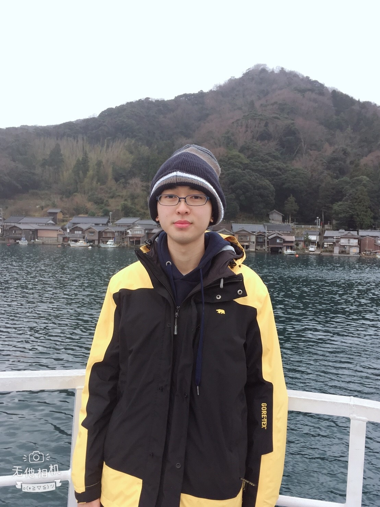

高中時期-高雄中學
跳至大學時期- 高一 
- 高二
- 高三
進入雄中的第一年，同學們都是各個學校的佼佼者，所以成績一直處在班級的後段班，生活上由於課業壓力大的關係，所以也是一團糟
不過由於當時我直屬學長在籃球校隊打球，甚至代表學校在HBL乙組征戰，當時在了解我的情況後，也得知在我本身就有在運動打籃球
所以推薦我不如跟著他一起在他們校隊練習時一起去練球，放鬆自己白天上課緊繃的心情，也因此開始沒有補習的晚上時候，都會跟著
學長們一起打球.......
HBL FOX官網
跟著學長們一起打球，不僅交到了許多朋友，另外，也慢慢地在繁忙的高中生活中找到了自己的定位，也因為如此，也一改高一時對課業的
迷惘，漸漸地有了學習的動力與自信，所以成績也慢慢地爬回班級上的前段班。除了平時晚上打籃球外，由於高二那年，學校開設了社團活
動課，要求每位同學都需要參加社團活動，那時剛好我的朋友從高一的時候就參加熱舞社，並且也是熱舞社的社團幹部，所以那時我就跟著
他加入了熱舞社，雖然到目前大學的我依舊沒有辦法獨立且流暢的跳完一整支舞，不過當時跟著大家一起揮灑青春汗水的感覺，還是很棒的~
109th 雄中熱舞社粉專~
到了高三，也算是該收心的時候了，所以當時減少了到球隊練球的時間，開始全心準備大學升學考試，好在當時班上跟幾位同學組成讀書會
跟著大家一起學習，一起拚鬥，也是一段辛苦卻擁有許多珍貴回憶的人生歲月，而當時有幸在學測時就考上我的第一志願-台大電機，所以在
高三下的時間，又算是比較悠閒的時光，而在當時因為熟識的熱舞社幹部擔任畢業典禮的籌備幹部，所以看到我整天這樣飄來飄去，無所事事
的樣子，所以就推薦我一起加入畢業典禮學生籌備小組，而我當時進入的是攝影組，負責畢業歌曲的攝影部分
那就來欣賞一下當時我們組上拍攝的畢業歌曲吧~哈哈~
大學時期-台大電機
跳回高中時期- 大一
- 大二
- 大三
- 大四
進入台大後，感覺生活的一切都變得很不一樣，沒有了所謂的"同班同學"，一下子感覺跟大家的距離好遠~很難認識系上同學，不過後來還是在
參加新生露營，電資野台開唱後，才慢慢地認識系上的其他同學，不過依舊還是跟高中時候差了好多歐~
上了大二之後，我才深刻體會到原來大學的課業是真的比高中時來的更加繁忙阿~當時為了課業真的是忙得不可開交阿，可以說是當時的情況是
被功課追著跑啊，整個被封印在宿舍裡，所以當時算是相當可怕的一年，不過也就是在這一年裡，我跟著系上同學除了平時依舊會打籃球運動之
外，也一起參加台大單車社，甚至在學期末，跟著系上朋友，從高雄出發，一路騎單車到墾丁壯遊~
單車誌 Cycling
大三那年，也算是開始要準備研究所申請的工作，尤其到了大三下，更是覺得焦急不安，有點六神無主，不過好險在系上學長的推薦下，參加了
IC Camp，活動中不僅有各個電子所實驗室的介紹與火力展示，到了最後更是有著分組作團對競賽，雖然當時我們並沒有獲獎QQ不過卻也是一個
相當有意思且有趣的活動，另外同時也讓我推甄究所焦躁的心得以獲得緩解~
在大四這一年來，基本上我應該已經算是脫離了大學生活。在這一年中，我進入劉深淵教授的實驗室做專題，最後順利申請上電子所找上流深淵
教授當指導教授，所以快這一年來，我基本上來說已經算是一個研究生了，從一開始進入實驗室裡的懵懂無知，到上個禮拜，我已經完成第一次
晶片下線工作，以及PCB版的製作，在這短短快10個月中，我覺得學習的份量十分的扎實，雖然很辛苦，不過好在實驗室學長的熱心指導與幫助
讓我得以更快的上手實驗室的研究工作~